일반기계기사 (2011-03-20 기출문제)
1과목: 재료역학
1. 그림과 같은 보의 최대 처짐을 나타내는 식은? (단, 보의 굽힘 강성 EI는 일정하고, 보의 자중은 무시한다.)
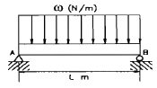
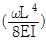
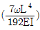
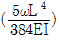
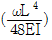
(정답률: 59%)
2. 표점길이가 400mm, 지름이 24mm인 강재 시편에 10kN의 인장력을 작용하였더니 변형률이 0.0001이었다. 탄성계수는 약 GPa인가? (단, 시편은 선형 탄성고동을 한다고 가정한다.)
- 2.21
- 22.1
- 221
- 2210
(정답률: 45%)

3. 그림과 같은 단순 지지보가 집중하중 P를 받을 때 굽힘모멘트 선도는 아래 그림과 같다. A, C점에서 처짐선상에 그은 접선이 만나는 각 θ는 ? (단, 보의 굽힘강성 EI는 일정하고 자중은 무시한다.)
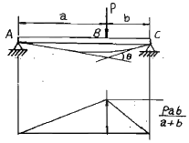
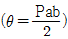
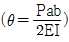
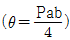
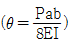
(정답률: 37%)
4. 단순보 위의 전 길이에 걸쳐 균일 분포하중이 작용할 때, 굽힘 모멘트 선도를 그리면 굽힘 모멘트 선도의 형태는 어떻게 되는가?
- 3차 곡선
- 직선
- 사인곡선
- 포물선
(정답률: 44%)
5. 그림과 같이 한 끝이 고정된 축에 두 개의 토크가 작용하고 있다. 고정단에서 축에 작용하는 토크는 몇 kN·m인가?
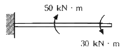
- 10
- 20
- 30
- 40
(정답률: 56%)
6. 다음과 같이 구멍이 뚫린 단면에서 도심위치
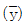
와 x-x축에 대한 단면2차모멘트 Ixx로 옳은 것은?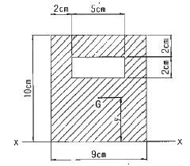
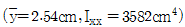
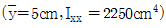
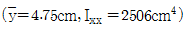
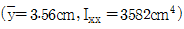
(정답률: 41%)
7. 그림과 같이 길이 ℓ=4m의 단순보에 균일 분포하중 ω가 작용하고 있으며 보의 최대 굽힘응력 σmax=85N/cm2일때 최대 전단응력은 약 몇 kPa인가? (단, 보의 횡단면적 b×h=8cm×12cm이다.)
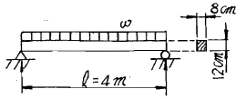
- 2.7
- 17.6
- 25.5
- 35.4
(정답률: 32%)
8. 지름 12mm, 표정거리 200mm의 연강재 시험편에 대한 인장시험을 수행하였다. 시험편의 표정거리가 250mm로 늘어났을 때, 이 연강재의 신장율 [%]은?
- 10%
- 20%
- 25%
- 50%
(정답률: 52%)
9. 그림과 같은 축지름 50mm의 축에 고정된 폴리에 1750rpm, 7.35kW의 모터를 벨트로 연결하여 구동하려고 한다. 키에 발생하는 전단응력 (τ)과 압축응력 (σ)은 몇 MPa인가? (단, 키의 치수(mm)느누 b×h×L=8×4×60이다.)
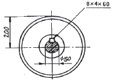
- τ=3.34, σ=6.68
- τ=3.34, σ=13.37
- τ=4.34, σ=13.37
- τ=4.34, σ=23.37
(정답률: 30%)
10. 반지름 r인 원형축의 양단에 비틀림 모멘트 Mt가 작용될 경우 축의 양단 사이의 최대 비틀림각은? (단, 축의 길이는 L이고, 전단 탄성계수는 G이다.)
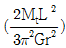
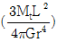
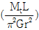
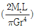
(정답률: 47%)
11. 그림과 같은 삼각형 분포하중을 받는 단순보에서 최대 굽힘 모멘트는?
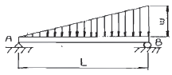
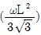
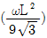
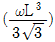
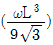
(정답률: 32%)
12. 다음 그림에서 단순보의 최대 처짐량(δ1)과 양단고정보의 최대 처짐량 (δ2)의 비 (δ2/δ1)은 얼마인가? (단, 보의 굽힘 강성 EI는 일정하고, 자중은 무시한다.)
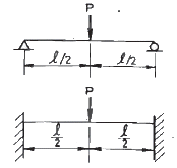
- 1/4
- 1/2
- 3/4
- 1
(정답률: 47%)
13. 순수 굽힘을 받는 선형 탄성 균일 단면 보의 곡률과 굽힘모멘트에 대한 설명 중 옳은 것은?
- 보의 중립면에서 곡률반경은 굽힘 모멘트에 비례한다.
- 보의 굽힘 응력은 굽힘 모멘트에 반비례한다.
- 보의 중립면에서 곡률은 중립축에 관한 단면2차모멘트에 반비례한다.
- 보의 중립면에서 곡률은 굽힘강성(flexural rigidity)에 비례한다.
(정답률: 31%)
14. 지름이 2cm이고 길이가 1m인 원동형 중실 기둥의 좌굴에 관한 임계하중을 오일러 공식으로 구하면 약 몇 kN인가? (단, 기둥의 양단은 고정되어 있고, 탄성계수는 E=200GPa이다.)
- 62.1
- 124.1
- 157.1
- 186.1
(정답률: 39%)
15. 중공 원형 축에 비틀림 모멘트 T=140N·m가 작용할 때, 안지름이 20mm 바깥지름이 25mm라면 최대전단응력은 약 몇 MPa인가?
- 4.83
- 9.66
- 77.3
- 154.6
(정답률: 47%)
16. 그림의 구조물이 하중 P를 받을 때, 구조물속에 저장되는 탄성 에너지는? (단, 단면적 A, 탄성계수 E는 모두 같다.)
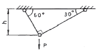
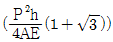
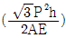
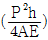
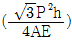
(정답률: 36%)
17. 그림과 같이 단면적이 2cm2인 AB 및 CD 막대의 B점과 C점이 1cm 만클 떨어져 있다. 두 막대에 인장력을 가하여 늘인 후 B점과 C점에 핀을 끼워 두 막대를 연결하려고 한다. 연결 후 두 막대에 작용하는 인장력은 약 몇 kN인가? (단, 재료의 탄성계수는 50GPa이다.)
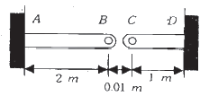
- 3.3
- 13.3
- 23.3
- 33.3
(정답률: 38%)
18. 그림과 같은 평면응력상태인 모어원에서 σx=-σy>0인 경우 최대 전단응력은?
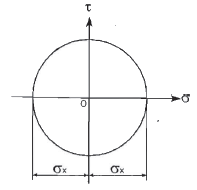
- 1/2·σx
- τx-τy
- 1/2(σx+σy)
- σx
(정답률: 31%)
19. 단면적이 단면적이 2cm2이고 길이가 4m인 환봉에 10kN의 축 방향하중을 가하였다. 이 때 환봉에 발생한 응력은 얼마인가?
- 5000N/m2
- 2500N/m2
- 5×107N/m2
- 5×105N/m2
(정답률: 51%)
20. 판 두께 3mm를 사용하여 내압 20kN/cm2을 받을 수 있는 구형(spherical) 내압용기를 만들려고 할 때 이 재료의 허용 인장응력을 σv=900kN/cm2으로 하여 이 용기의 최대 안전내경 d를 구하면 몇 cm인가?
- 54
- 108
- 27
- 78
(정답률: 35%)
2과목: 기계열역학
21. 27kPa의 압력차는 수은주로 어느 정도 높이가 되겠는가? (단, 수은의 밀도는 13590kg/m3이다.)
- 약 158mm
- 약 203mm
- 약 265mm
- 약 557mm
(정답률: 50%)
22. 물 1kg이 압력 300kPa에서 증발할 때 증가한 체적이 0.8m3이었다면, 이때의 외부 일은? (단, 온도는 일정하다고 가정한다.)
- 140kJ
- 240kJ
- 320kJ
- 420kJ
(정답률: 53%)
23. 100℃와 50℃ 사이에서 작동되는 가역열기관의 최대 열효율은 약 얼마인가?
- 55.0%
- 16.7%
- 13.4%
- 8.3%
(정답률: 48%)
24. -3℃에서 열을 흡수하여 27℃에 방열하는 냉동기의 최대 성능계수는?
- 9.0
- 10.0
- 11.3
- 15.3
(정답률: 41%)
25. 냉애 R-134a를 사용하는 증기-압축 냉동사이클에서 냉애의 엔트로피가 감소하는 구간은 어디인가?
- 증발구간
- 압축구간
- 팽창구간
- 응축구간
(정답률: 34%)
26. 열역학 제 1법칙은 다음의 어떤 과정에서 성립하는가?
- 가역 과정에서만 성립한다.
- 비가역 과정에서만 성립한다.
- 가역 등온 과정에서만 성립한다.
- 가역이나 비가역 과정을 막론하고 성립한다.
(정답률: 26%)
27. 계(系)가 한 상태에서 다른 상태로 변할 때 엔트로피의 변화는?
- 증가하거나 불변이다.
- 항상 증가한다.
- 감소하거나 불변이다.
- 증가, 감소할 수도 있으며 불변일 경우도 있다.
(정답률: 36%)
28. 105Pa, 15℃의 공기가 n=1.3인 폴리트로픽 과정(Polytropic Process)으로 변화하여 7×105Pa로 압축되었다. 압축 후의 온도는 약 몇 ℃인가?
- 187℃
- 193℃
- 165℃
- 178℃
(정답률: 46%)
29. 온도 15℃, 압력 100kPa 상태의 체적이 일정한 용기안에 어떤 이상 기체 5kg이 들어 있다. 이 기체가 50℃가 될 때까지 가열되었다. 이 과정동안의 엔트로피 변화는 약 얼마인가? (단, 이 기체의 정압비열과 정적비열은 1.001kJ/kg·K, 0.7171kJ/kg·K이다.)
- 0.411 kJ/K 증가
- 0.411 kJ/K 감소
- 0.575 kJ/K 증가
- 0.575 kJ/K 감소
(정답률: 34%)
30. 증기터빈으로 질량 유량 1kg/s, 엔탈피 h1=3500kJ/kg의 수증기가 들어온다. 중간 단에서 h2=3100kJ/kg의 수증기가 추출되며 나머지는 계속 팽창하여 h3=2500kJ/kg 상태로 출구에서 나온다면, 중간 단에서 추출되는 수증기의 질량 유량은? (단, 열손실은 없으며, 위치 에너지 및 운동 에너지의 변화가 없고, 총 터빈 출력은 900kW이다.)
- 0.167 kg/s
- 0.323 kg/s
- 0.714 kg/s
- 0.886 kg/s
(정답률: 29%)
31. 이상적인 가역과정에서 열량 △Q가 전달될 때, 온도 T가 일정하면 엔트로피의 변화 △S는?
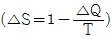
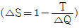
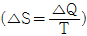
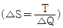
(정답률: 48%)
32. Carnot 냉동기로 25℃의 실내로부터 총 4kW의 열을 온도 36℃인 주위로 방출하여야 한다. 최소동력은 얼마인가?
- 0.148 kW
- 1.44 kW
- 2.81 kW
- 4.00 kW
(정답률: 40%)
33. P-V선도에서 그림과 같은 사이클 변화를 갖는 이상기체가 한 사이클 동안 행한 일은?
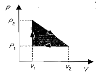
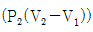
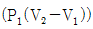
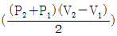
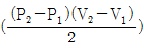
(정답률: 51%)
34. 500℃의 고온부와 50℃의 저온부 사이에서 작동하는 Carnot 사이클 열기관의 열효율은 얼마인가?
- 10%
- 42%
- 58%
- 90%
(정답률: 48%)
35. 8℃의 이상기체를 가역단열 압축하여 그 체적을 1/5로 하였을 때 기체의 온도는 몇 ℃로 되겠는가? (단, k=1.4이다.)
- -125℃
- 294℃
- 222℃
- 262℃
(정답률: 41%)
36. 열병합발전시스템에 대한 설명으로 올바른 것은?
- 증기 동력 시스템에서 전기와 함께 공정용 또는 난방용 스팀을 생산하는 시스템이다.
- 증기 동력 사이클 상부에 고온에서 작동하는 수은 동력 사이클을 결합한 시스템이다.
- 가스 터빈에서 방출되는 폐열을 증기 동력 사이클의 열원으로 사용하는 시스템이다.
- 한 단의 재열 사이클과 여러 단의 재생사이클을 복합한 시스템이다.
(정답률: 25%)
37. 수은주에 의해 측정된 대기압이 753mmHg일 때 진공도 90%의 절대압력은? (단, 수은의 밀도는 13600kg/m3, 중력가속도는 9.8m/s2이다.)
- 약 200.08kPa
- 약 190.08kPa
- 약 100.04kPa
- 약 10.04kPa
(정답률: 28%)
38. 200m의 높이로부터 250kg의 물체가 땅으로 떨어질 경우 일을 열량으로 환산하면 약 몇 kJ인가? (단, 중력가속도는 9.8m/s2이다.)
- 79
- 117
- 203
- 490
(정답률: 42%)
39. 다음 중 Rankine 사이클에 대한 설명으로 틀린 것은?
- Carnot 사이클을 현실화한 사이클이다.
- 증기의 최고온도는 터빈 재료의 내열특성에 의하여 제한된다.
- 팽창일에 비하여 압축일이 적은 편이다.
- 터빈 출구에서 건도가 낮을수록 유지관리에 유리하다.
(정답률: 28%)
40. 이상오토사이클의 열효율이 56.5%이라면 압축비는 약 얼마인가? (단, 작동 유체의 비열비는 1.4로 일정하다.)
- 7.5
- 8.0
- 9.0
- 9.5
(정답률: 44%)
3과목: 기계유체역학
41. 안지름 1cm의 원관 내를 유동하는 0℃의 물의 충류임계속도는 약 몇 cm/s인가? (단, 0℃인 물의 동점성계수는 0.01794cm2/s이며, 임계레이놀즈 수는 2100으로 한다.)
- 0.38
- 3.8
- 38
- 380
(정답률: 47%)
42. 그림과 같이 용기 안에 물(밀도 pw=1000kg/m3), 기름(밀도 poil=800kg/m3), rhdrl (압력 Pa=200kPa) 들어있다. 점 A에서의 압력은 약 몇 kPa인가?
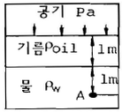
- 218
- 292
- 408
- 382
(정답률: 40%)
43. 다음 중 물리적 의미가 틀린 우차원 수는?
- 프로드수(Fr)=관성력/중력
- 웨버수(We)=관성력/표면장력
- 오일러수(Eu)=탄성력/관성력
- 레이놀즈수(Re)=관성력/점성력
(정답률: 44%)
44. 그림과 같이 수조의 하부에 연결된 작은 관을 통하여 대기 중으로 물이 분출되고 있다. 수면과 출구의 높이 차이는 3m이고, 그 사이에서 발생하는 총 손실수두가 0.5m일 때 유체의 분출속도는 약 몇 m/s인가? (단, 수조의 직경은 관에 비해 무한히 크다고 가정한다.)
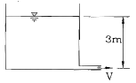
- 6.8
- 7.0
- 7.7
- 8.3
(정답률: 35%)
45. 수도꼭지로부터 흘러내리는 물줄기가 밑으로 갈수록 가늘게 되는 이유를 설명하는데 가장 적합한 두 가지 원리는?
- 연속방정식, 운동량방정식
- 연속방정식, 베르누이방정식
- 베르누이방정식, 운동량방정식
- 운동량방정식, 에너지방정식
(정답률: 44%)
46. 고속도로 톨게이트의 폭이 도로에 비하여 넓게 만들어진 이유를 가장 적절하게 설명해 줄 수 있는 것은?
- 연속 방정식
- 에너지 방정식
- 베르누이 방정식
- 열역학 제2법칙
(정답률: 34%)
47. 점성계수와 동점성계수에 관한 다음 설명 중 옳은 것은?
- 일반적으로 기체의 온도가 상승하면 정성계수가 감소한다.
- 일반적으로 액체의 온도가 상승하면 정성계수가 증가한다.
- 표준 상태에서의 물의 동점성계수는 공기보다 작다.
- 표준 상태에서의 물의 점성계수는 공기보다 작다.
(정답률: 34%)
48. 다음 그림과 같은 조건에서 이등변삼각형 수문(그림에서 AB)에 작용하는 합력 FAB(resultant force)을 구한 것은? (단, 삼각형 수문의 꼭짓점은 A이며, 밑변이 1.25m, 높이가 2m 이다.)
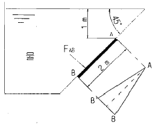
- 23.8kN
- 43.8kN
- 13.8kN
- 53.8kN
(정답률: 24%)
49. 부력(buoyant force)에 대한 설명으로 틀린 것은?
- 부력은 액체 속에 잠긴 물체가 액체에 의하여 수직 상방으로 받는 힘을 말한다.
- 부력은 액체에 잠긴 물체의 체적에 해당하는 액체의 무게와 같다.
- 같은 물체인 경우 깊은 곳에 잠겨 있을 때의 부력은 얕은 곳에 잠겨 있을 때의 부력보다 더 크다.
- 같은 물체에 작용하는 부력은 액체의 비중량에 따라 다르다.
(정답률: 37%)
50. 속이 찬 물방울 내부압력이 대기압보다 700Pa만큼 높다. 물방울의 표면장력이 8.75×10-2N/m라면 이 때의 물방울의 지름은 몇 cm인가?
- 0.⑤
- 0.1
- 5
- 0.0⑤
(정답률: 34%)
51. 그림과 같이 180°베인이 지름 5cm, 속도 30m/s의 물분류를 받으며 15m/s의 속도로 오른쪽으로 운동하는 경우, 이 베인이 받는 동력은 약 몇 kW인가?
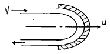
- 13.3
- 14.7
- 18.1
- 19.6
(정답률: 30%)
52. 무차원 속도 포텐셜이 ø=21nr일 때, r=2에서의 반경방향 무차원 속도의 크기는?
- 1/2
- 1
- 2
- 4
(정답률: 34%)
53. 다음 중 차원이 잘못 표시된 것은? (단, M : 질량, L : 길이, T : 시간)
- 압력(pressure) : MLT-2
- 일(work) : ML2T-2
- 동력(power) : ML2T-3
- 동점성계수(kinematic viscosity) : 라. L2T-1
(정답률: 33%)
54. 비중이 0.7인 오일을 직경이 20cm인 수평 원관을 통하여 2km 떨어진 곳까지 수송하려고 한다. 질량 유량이 20kg/s, 동점성계수가 2×10-4/s라면 원관 2km에서의 손실수두는 약 몇 m인가? (단, 물의 온도는 1000·kg/m3이다.)
- 59.2
- 29.6
- 2.96
- 5.92
(정답률: 40%)
55. 2차원 직각좌표계(x, y)상에서 x방향의 속도를 u, y방향의 속도를 v라고 한다. 어떤 이상유체의 2차원 정상 유동에서 u=Ax일 때 다음 중 y방향의 속도 v가 될 수 있는 것은? (단, A는 상수(A>0)이다.)
- A
- -A
- Ay
- -Ay
(정답률: 32%)
56. 표준 대기압에서 온도 20℃인 공기가 평판 위를 20m/s의 속도로 흐르고 있다. 선단으로부터 5cm 떨어진 곳에서의 경계층의 두께는 약 몇 mm인가? (단, 공기의 동점성계수는 15.68×10-6m2/s이다.)
- 0.99
- 0.74
- 0.13
- 0.06
(정답률: 27%)
57. 지름 1m, 높이 40m인 원통 굴뚝에 바람이 14m/s의 속도로 불고 있다. 이때 바람에 의해 굴뚝 바닥에 걸리는 모멘트는 약 몇 N·m인가? (단, 공기의 밀도는 1.23kg/m3, 점성계수는 1.78×10-5kg/m·s, 원통에 대한 항력계수는 0.35이다.)
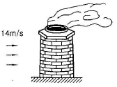
- 168.8
- 337.6
- 1688
- 33760
(정답률: 24%)
58. 길이 100m인 배가 10m/s의 속도로 항해한다. 길이 2m인 모형 배를 만들어 조파저항을 측정한 후 원형 배의 조파저항을 구하고자 동일한 조건의 해수에서 실험한 경우 모형 배의 속도를 약 몇 m/s로 하면 되겠는가?
- 0.27
- 1.41
- 2.54
- 3.42
(정답률: 51%)
59. 다음에서 하겐-포아젤(Hagen-Poiseuille)법칙을 이용한 세관식 점도계는?
- 세이볼트(saybolt) 점도계
- 낙구식 점도계
- 스토머(Stomer) 점도계
- 맥미셀(MacMichael) 점도계
(정답률: 21%)
60. 그림과 같이 단면적이 급격히 넓어지는 급확대 흐름에서 1번 위치에서의 압력은 대기압이고, 속도는 2m/s이다. 단면적 비 A1/A2=0.3일 때 유동 손실수도를 계산하면 약 몇 m인가?
- 0.1
- 0.15
- 0.2
- 0.25
(정답률: 12%)
4과목: 기계재료 및 유압기기
61. 강철을 생산하는 제강로를 염기성과 산성으로 구분하는데 이것은 무엇으로 구분하는가?
- 사용되는 철광석으로
- 노내의 내화물로
- 주입하는 용제의 성질로
- 발생하는 가스의 성질로
(정답률: 36%)
62. 아래 괄호 ( )안에 알맞은 것은?
- Cr
- Mn
- P
- S
(정답률: 53%)
63. 다음 중 ESD(Extra Super Duralumin) 합금계는?
- Al-Cu-Zn-Ni-Mg-Co
- Al-Cu-Zn-Ti-Mn-Co
- Al-Cu-Sn-Si-Mn-Cr
- Al-Cu-Zn-Mg-Mn-Cr
(정답률: 61%)
64. 다음 특수강의 목적 중 틀린 것은?
- 내마멸성, 내식성 개선
- 고온강도 저하
- 절삭성 개선
- 담금질성 향상
(정답률: 74%)
65. 금속침투법 중 Zn을 강 표면에 침투 확신시키는 표면처리법은?
- 크로마이징
- 세리다이징
- 칼로라이징
- 보로나이징
(정답률: 61%)
66. 표점거리 100mm, 시험편의 평행부 지름 14mm인 시험편을 최대하중 6400kgf로 인장한 후 표점거리가 120mm로 변화되었다. 이때 인장강도는 약 몇 kgf/mm2인가?
- 10.4
- 32.7
- 41.6
- 64.1
(정답률: 58%)
67. 다음 중 Ni-Fe계 합금인 인바(invar)를 바르게 설명한 것은?
- Ni35∼36%, C 0.1∼0.3%, Mn 0.4%와 Fe의 합금으로 내식성이 우수하고, 상온부근에서 열팽창계수가 매우 작아 길이측정용 표준지, 시계의 추, 바이메탈 등에 사용된다.
- Ni 50%, Fe 50% 합금으로 초투자율, 포화 자기, 전기저항이 크므로 저출력 변성기, 저주파 변성기 등의 자심으로 널리 사용된다.
- Ni에 Cr 13∼21%, Fe 6.5%를 함유한 강으로 내식성, 내열성 우수하여 다이얼게이지, 유량계 등에 사용된다.
- Ni-Mo-Cr-Si 등을 함유한 합금으로 내식성이 우수하다.
(정답률: 59%)
68. 공정주철(eutectic cast iron)의 탄소함량으로 적합한 것은?
- 4.3%
- 4.3% 이상
- 2.0∼4.3%
- 0.86% 이하
(정답률: 54%)
69. 일반적으로 순금속의 결정구조를 이루는 결정격자가 아닌 것은?
- 단순입방격자
- 체심입방격자
- 면심입방격자
- 조밀육방격자
(정답률: 60%)
70. 강으로 만든 부품, 특히 공구강의 표면에 TiN 이나 TiC를 증착시키는 표면 경화법은?
- 침탄법
- 질화법
- 금속침투법
- PCVD
(정답률: 24%)
71. 유압회로에서 감압밸브, 체크밸브, 릴리프밸브 등에서 밸브사트를 두드려 비교적 높은 음을 내는 일종의 자려 진동 현상은?
- 서징(Surging)현상
- 트램핑(tramping)현상
- 챔버링(Chambering)현상
- 채터링(Chattering)현상
(정답률: 68%)
72. 실린더의 부하 변동에 상관없이 임의의 위치에 고정시킬 수 있는 회로는?
- 로킹 회로
- 바이패스 회로
- 크래킹 회로
- 카운터 밸런스 회로
(정답률: 65%)
73. 상온에서의 수은의 비중이 13.55일 때 수은의 밀도는 몇 kg/m3인가?
- 13550
- 1338
- 1383
- 183.3
(정답률: 62%)
74. 3위치 4방향 밸브(three position four way valve)에서 일명 센터 바이 패스형이라고도 하며, 중립위치에서 A, B 포트가 모두 닫히면 실린더는 임의의 위치에서 고정되고, 또 P포트와 T 포트가 서로 통하게 되므로 펌프를 무부하 시킬 수 있는 형식은?
- 클로즈드 센터형
- 펌프 클로즈드 센터형
- 탠덤 센터형
- 오픈 센터형
(정답률: 54%)
75. 유압장치의 운동부분에 사용되는 실(seal)의 일반적인 명칭은?
- 패킹(packing)
- 개스킷(gasket)
- 심레스(seamless)
- 필터(filter)
(정답률: 60%)
76. 유압 용어를 설명한 것으로 올바른 것은?
- 서지압력 : 계통 내 흐름의 과도적인 변동으로 인해 발생하는 압력
- 오리피스 : 길이가 단면 치수에 비해서 비교적 긴 죙구
- 초크 : 길이가 단면 치수에 비해서 짧은 죙구
- 크래킹 압력 : 체크 밸브, 릴리프 밸브 등의 입구 쪽 압력이 강하하고, 밸브가 닫히기 시작하여 밸브의 누설량이 어느 정도 규정의 양까지 감소했을 때의 압력
(정답률: 47%)
77. 유압펌프에서 펌프가 축을 통하여 받은 에너지를 얼마만큼 유용한 에너지로 전환시켰는가의 정도를 나타내는 척도로서 펌프 동력의 축 동력에 대한 비를 무엇이라 하는가?
- 용적효율
- 기계적효율
- 전체효율
- 유압효율
(정답률: 27%)
78. 내경이 50mm인 유압실린더를 이용하여 1t의 물체를 50mm/s의 속도로 밀어 올리려고 한다. 가장 적함한 유압 펌프의 동력은? (단, 유압 시스템의 모든 손실은 무시한다.)
- 0.1kW
- 0.5kW
- 1kW
- 2kW
(정답률: 33%)
79. 기어 펌프에서 발생하는 폐압 현상을 방지하기 위한 방법으로 가장 적절한 것은?
- 오일을 보충한다.
- 베어링을 교환한다.
- 릴리프 홈이 적용된 기어를 사용한다.
- 베인을 교환한다.
(정답률: 63%)
80. 유압 회로내의 압력이 설정 값에 달하면 자동적으로 펌프송출량을 기름 탱크로 복귀시켜 무부하 운전을 하는 압력 제어밸브는?
- 언로드 밸브
- 강압 밸브
- 시퀸스 밸브
- 체크 밸브
(정답률: 47%)
5과목: 기계제작법 및 기계동력학
81. 그림과 같은 고정구에 의하여 테이퍼 1/30의 검사를 할 때 A로부터 B까지 다이얼 게이지를 이동시키면 다이얼 게이지의 지시눈금의 차는 얼마인가?
- 3.0mm
- 3.5mm
- 5.0mm
- 2.5mm
(정답률: 13%)
82. 사인바에 대한 설명 중 틀린 것은?
- 45°를 초과하여 측정할 때, 오차가 급격히 커진다.
- 사인바는 삼각함수를 이용하여 각도 측정을 한다.
- 하이트 게이지와 함께 사용해 오차를 보정할 수 있다.
- 호칭치수는 양 롤러간의 중심거리로 나타낸다.
(정답률: 49%)
83. 심냉 처리(sub-zeron treatment)를 가장 올바르게 설명한 것은?
- 강철을 담금질하기 전에 표면에 붙은 불순물을 화학적으로 제거시키는 것
- 처음에 기름으로 냉각한 다음 계속하여 물속에 담그고 냉각하는 것
- 담금질 후 0℃이하의 온도까지 냉각시켜 잔류 오스테나이트를 마텐자이트화 하는 것
- 담금질 직후 바로 템퍼링 하기 전에 얼마 동안 0℃에 두었다가 템퍼링 하는 것
(정답률: 65%)
84. 주조에서 도가니로의 규격으로 옳은 것은?
- 1시간에 용해할 수 있는 구리의 중량으로 표시하며, N번(#N)이라 한다.
- 1회에 용해할 수 있는 구리의 중량으로 표시하며, N번(#N)이라 한다.
- 1시간에 용해할 수 있는 주철의 중량으로 표시하며, N번(#N)이라 한다.
- 1회에 용해할 수 있는 주철의 중량으로 표시하며, N번(#N)이라 한다.
(정답률: 42%)
85. 굽힘 가공 시 발생할 수 있는 스프링 백에 대한 설명으로 틀린 것은?
- 탄성한계가 클수록 스프링 백의 양은 커진다.
- 동일한 판 두께에 대해서는 굽힘 반지름이 클수록 스프링 백의 양은 커진다.
- 같은 두께의 판재에서 다이의 어깨 나비가 작아질수록 스프링 백의 양은 커진다.
- 동일한 굽힘 반지름에 대해서는 판 두께가 클수록 스프링 백의 양은 커진다.
(정답률: 34%)
86. 다음 용접 중 용접전류, 통전시간 및 가압력이 중요한 용접 조건이 되는 것은?
- 테르밋 용접(thermit welding)
- 스폿 용접(spot welding)
- 가스 용접(gas welding)
- 아크 용접(arc welding)
(정답률: 30%)
87. 밀링작업에 있어서 지름 50mm, 날수 15개인 평면커터로 주축회전수 200rpm, 테이블 이송속도 1500mm/min으로 가공할 때 커터날 당 이송량(mm/tooth)은?
- 0.3
- 0.5
- 0.7
- 0.9
(정답률: 37%)
88. 금속을 소성가공할 때 열간가공과 냉간가공의 구별은 어떤 온도를 기준으로 하는가?
- 담금질 온도
- 변태 온도
- 재결정 온도
- 단조 온도
(정답률: 75%)
89. 공작기계에 사용되는 속도열 중 일반적으로 가장 많이 사용되고 있는 속도열은 다음 중 어느 것인가?
- 등비급수 속도열
- 등차급수 속도열
- 조회급수 속도열
- 대수급수 속도열
(정답률: 44%)
90. 방전가공에서 전극 재료의 구비조건으로 거리가 먼 것은?
- 구하기 쉽고 가격이 저렴해야 한다.
- 기계가공이 쉬워야 한다.
- 가공 전극의 소모가 커야 한다.
- 방전이 안전하고 가공속도가 커야 한다.
(정답률: 68%)
91. 어떤 물체가 정지 상태로부터 다음 그래프와 같은 가속도로 가속된다. 20초 경과 후의 속도는 몇 m/s인가?
- 1
- 2
- 3
- 4
(정답률: 52%)
92. 전달률이 로 표시될 때 전달률이 1보다 큰 값을 갖는 범위는?
- ω < √2
- ωn/ω > 1
- ω < √2ωn
- ω/ωn > 1
(정답률: 32%)
93. 회전운동만을 하고 있는 원판의 반지름이 50cm이고, 원주속도가 10m/s일 때, 이 원판의 각속도는 몇 rad/s인가?
- 20
- 0.2
- 500
- 5
(정답률: 36%)
94. 무게 w인 물체가 h의 높이에서 자유 낙하한다. 공기 저항을 무시할 때, 이 물체가 도달할 수 있는 최대 속력은?
(정답률: 39%)
95. 1자유도 비감쇠계가 자유진동을 하고 있다. 진동수가 20Hz이고 변위 진폭이 0.15mm임이 측정되었다. 이 시스템의 가속도 최대진폭은 약 몇 mm/s2인가?
- 2370
- 237
- 190
- 19
(정답률: 23%)
96. 로 표현되는 감쇠 자유진동에서 감쇠비(ζ)는?
- 1/√3
- 1/3
- 1/2
- 1/9
(정답률: 10%)
97. 질량이 10kg이고 균질한 상자에 40N의 힘을 가하여 미끄러지게 한다. 상자와 바닥사이의 마찰계수가 0.2라면 상자를 넘어뜨리지 않고 미끄러지게 할 수 있는 최대 높이 x는 몇 m인가?
- 0.47
- 0.52
- 0.69
- 0.80
(정답률: 17%)
98. 2000kg의 자동차가 90km/h의 속력으로 경사 없는 평면을 달리다가 전방의 물체를 보고 브레이크를 밟아 4초 이내에 자동차가 정지하기 위하여 필요한 브레이크의 제동력은 몇 N인가?
- 12000
- 12500
- 45000
- 50000
(정답률: 40%)
99. 길이가 40cm이고 질량이 0.2kg인 막대가 수직면상에서 한쪽 끝을 중심으로 회전진동을 할 때 고유진동수는 약 몇 Hz인가? (단, 중력가속도는 9.8m/s2이다.)
- 0.44
- 0.96
- 1.4
- 1.9
(정답률: 27%)
100. 질량 1000kg인 엘리베이터가 0.2g의 가속도로 내려오고 있다. 10m 내려오는 동안에 엘리베이터에 작용한 힘이 한 일의 합은 몇 kJ인가? (단, 중력가속도는 10m/s2으로 한다.)
- 100
- 80
- 50
- 20
(정답률: 22%)
E = (F/A) / (ΔL/L)
여기서 F는 인장력, A는 단면적, ΔL은 변형량, L은 원래 길이이다.
따라서,
E = (10kN / (π x (12mm)^2)) / (0.0001 x 400mm)
= 2.21 x 10^11 Pa = 221 GPa
따라서 정답은 "221"이다.